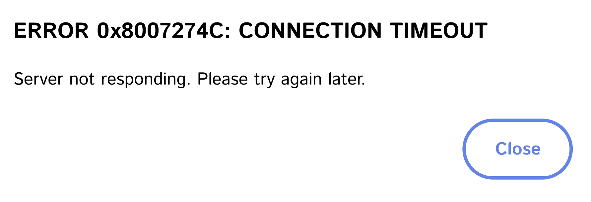
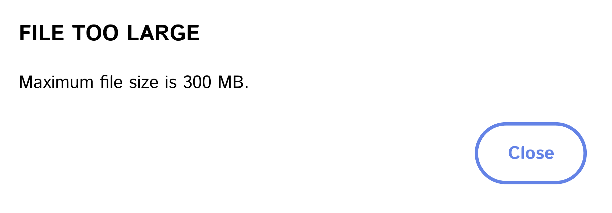

UI Optimization Initiative
Enhancing enterprise system usability through targeted improvements
Problem Statement
Note: This case study involves work on proprietary enterprise systems. Information has been generalized to protect confidentiality, and all images are recreations that demonstrate the core concepts without revealing the original system details.
Our enterprise document management system's user interface was creating significant usability challenges across the organization. Users frequently encountered confusion and inefficiencies, leading to errors in document processing and increased support requests. While we had identified numerous opportunities for improvement, implementation was constrained by limited developer resources, resulting in a growing backlog of necessary system enhancements.
Constraints
Working within an enterprise environment presented several key challenges. We needed to implement improvements within strict budget limitations while maintaining system stability. Our development resources were shared across multiple departments, often leading to delayed improvements as other projects took priority. Additionally, any system modifications required careful coordination through established approval and deployment processes.
Process
Our approach to addressing these interface challenges began with a comprehensive review of user feedback and support tickets. We consolidated this information to create a prioritized improvement backlog, focusing on changes that would have the most significant impact on daily workflows.
With my background in software engineering, I saw an opportunity to bridge the gap between identifying problems and implementing solutions. I initiated a partnership with our development team, beginning by shadowing senior developers to understand the system architecture and development processes. This collaborative approach allowed me to gain the necessary access and knowledge to contribute directly to system improvements.
Through systematic analysis and user feedback, we identified several critical areas for improvement:
- Interface elements that required excessive scrolling
- Lack of integrated help resources
- Complex processes requiring administrator intervention
- Inefficient document management workflows
Solution
Using C#, JavaScript, and modern development tools, I implemented a series of targeted improvements that addressed key user pain points while maintaining system stability.
Navigation Improvements
The first set of changes focused on making the interface more intuitive and accessible. I repositioned critical action buttons to ensure they remained visible without requiring excessive scrolling. To support new users, I integrated help resources directly into the main navigation bar, providing immediate access to guidance when needed. Additionally, I implemented a new feature allowing users to reverse certain actions independently, reducing the need for administrator intervention.
The horizontal scrolling issue was caused by the title field, which would expand to display the full text regardless of length. While the ideal solution would have been implementing text wrapping or a condensed view with expandable ellipses, the application's template structure made these seemingly simple fixes quite complex to implement. Moving the action buttons provided a quicker alternative to help users while the more comprehensive title field solution remains a long-term goal.
Experience the UI Improvement
Scroll horizontally in both examples to see how moving the action buttons improved usability.
If you have a large enough monitar to see the entire table, try shrinking your browser window.
| ID | TITLE | OWNER | STATUS | DATE MODIFIED | ACTIONS |
|---|---|---|---|---|---|
| DOC/PRE-24-78392 | Annual Equipment Report | Autumn Willard | Unsubmitted Draft | 2025-03-10 | |
| DOC/PRE-25-14506 | Standard Operating Procedure Review for Warehouse Equipment Calibration and Maintenance Protocols | Autumn Willard | Under Review | 2025-03-12 | |
| DOC/PRE-24-90123 | Quarterly Project Status Update | Autumn Willard | Approved | 2025-03-01 |
| ACTIONS | ID | TITLE | OWNER | STATUS | DATE MODIFIED |
|---|---|---|---|---|---|
| DOC/PRE-24-78392 | Annual Equipment Report | Autumn Willard | Unsubmitted Draft | 2025-03-10 | |
| DOC/PRE-25-14506 | Standard Operating Procedure Review for Warehouse Equipment Calibration and Maintenance Protocols | Autumn Willard | Under Review | 2025-03-12 | |
| DOC/PRE-24-90123 | Quarterly Project Status Update | Autumn Willard | Approved | 2025-03-01 |
The horizontal scrolling issue was caused by the title field, which would expand to display the full text regardless of length. By moving the action buttons to the left side, users could immediately see and access them without needing to scroll horizontally, even when titles were exceptionally long.
Classification Enhancements
To support organizational reporting needs, I introduced additional classification subtypes into the system. This enhancement enabled more detailed categorization and specific reporting capabilities, giving managers comprehensive insights into team contributions across different types of activities.
Record Management Improvements
I implemented a "Date Last Modified" sorting option in the document queue, allowing users to easily identify and prioritize recently updated files. This simple yet effective change streamlined document management by eliminating the need to manually search for recently edited items, saving considerable time for frequent users.
System Optimization
To address technical limitations and improve system reliability, I implemented several backend improvements. This included optimizing file upload restrictions to prevent common upload errors and adding modification tracking capabilities that enabled users to better manage their records. The addition of enhanced sorting and filtering options made it significantly easier for users to locate and manage their documents efficiently.


Document Security Controls
To increase accountability and reduce manual verification work, I added a required verification checkpoint in the document release process. This feature ensures that users explicitly confirm documents match what was previously reviewed, creating an audit trail and enhancing document security throughout the review workflow.
Workflow Optimization
I introduced a self-service option that empowered the reviewers to remove themselves from accidentally claimed documents without administrator intervention. Additionally, I implemented logic to prevent users with certain roles from being assigned conflicting responsibilities, eliminating a common error that created workflow bottlenecks when users couldn't complete reviews due to system permission conflicts.
Results
The implementation of these improvements led to significant positive outcomes across the organization. Users reported spending less time navigating the system, and upload-related errors were virtually eliminated. The streamlined review processes reduced the need for administrator intervention, while enhanced reporting capabilities provided better visibility into document status and system usage.
Perhaps most importantly, the improvements resulted in a marked decrease in user-reported issues and support requests. The combination of intuitive navigation, reliable system operations, and streamlined workflows created a more efficient and user-friendly environment for document management.